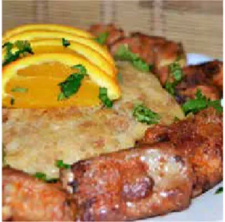
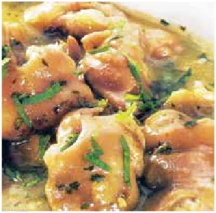
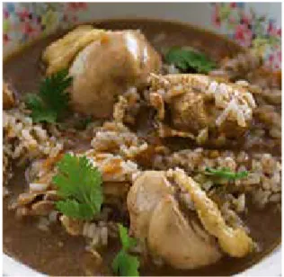
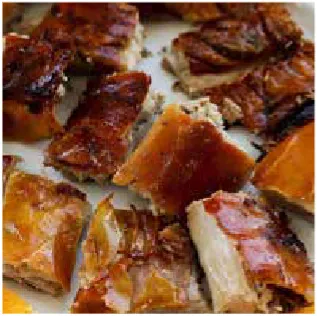

Chapter 5 · The Portuguese Vineyard and Wine Book
Matching food with wine
HOW TO FIND THE RIGHT WINE FOR PORTUGUESE DISHES
Introduction
Since wine is traditionally drunk with food in southern European countries, rather than as a long drink at social gatherings, the interaction of food with wine is an important consideration. Above all, however, it is critical to avoid negative pairings that detract in any way from the positive experience of traditional Portuguese meals.
The evaluation of wine and food is both an art and a science. To focus our senses for wine and food evaluation, we need to learn to smell and taste. The science portion of the evaluation process provides specific techniques with visual, olfactory, and taste evaluations. It also provides a clear measurement of wine and food elements and the levels present or absent from a product. It started in 1914, when the primary taste components were described as sweet, sour, bitter, and salty, while researchers in Japan proposed a fifth element, umami. Recent research suggests that this is an oversimplification.
Glossary of the sensory perception of food and wine Sensory impression English
Visual aspect (Eye appeal) Colour, clarity Overall impression Flavour (Hippocampus) Gustatory (Tongue receptors) Taste Gustatory (Trigeminal overstim- Hot, astringent, body, other Quente, adstringente, ulation) mouth-feel sensations
Olfactory (Retro-nasal receptors) Smell, odour, aroma
The following will attempt to describe the sensory ability to identify taste criteria, aromas and bouquet for the decision whether wine matches with the food or not.
The main organoleptic properties of the food event are flavour/odour (volatile compounds detected by olfactory/ retro-nasal receptors) and taste (gustatory compounds detected by the receptors in taste buds of the tongue). Scientifically, a clear distinction is made here between perceptions of the chemical compounds responsible for the taste characteristics (such as miscellaneous compounds, alcohols, aldehydes, ketones, lactones, thiols, and phenolics) and the smell/odour characteristics of other compounds (such as esters, linear terpenes, cyclic terpenes, and aromatic amines).
However, the overall sensory impression of food and wine only occurs in the hippocampus zone of the brain through the specific stimuli transmitted by axons (from Greek ξων). Our nervous system perceives the aroma/flavour of a dish through the interaction of the senses of smell and taste by combining both signals in the brain.
The aroma wheel, inicially developed by Ann C. Noble of University of California, Davis and improved by helps in determining categories of flavours. The evaluation exercise provides a clear differentiation of food and wine based on colour, smell (aroma), texture/mouthfeel sensations, and taste. Evaluation sheets with a clear definition of descriptors facilitate the decision-making process.
Physiological processes of the flavour recognition hierarchy.
Below, we will try to develop empirical basic rules that correspond to the physiological prerequisites (receptors and flow of stimuli) of human sensory perception.
In the case of combined consumption of food and wine, the final impression can be characterised by its aromatic and gustatory (taste and smell) compounds and its texture/mouthfeel sensations (body, astringency, alcohol content, among others).
Perception, recognition, and difference threshold are terms to describe the concentration of the aroma substance that is just sufficient to recognize or describe the odour. The
Portuguese German
Cor, limpidez Färbung, Klarheit
Paladar, flavor Geschmack,
Gosto, sabor Schmecken Scharf, adstringier-
corpo, outras sensações end, körperlich, andere Mundgefühlsempfindungen
Cheiro, odor, aroma Geruch, Duft, Aroma
Chemical Uptake by sensory organs
stimulus (receptor)
Transmission
Conversion into to the brain
electrical signals
Stimulus processing
Sensory perception
(Source: Busch-Stockfisch, Praxis Handbuch Sensorik)
Olfactory and gustatory odour threshold of each olfactory-relevant compound must Olfactory signal centres be individually considered. In addition to the recognition threshold, a distinction is made between the lower stimulus or perception threshold, which indicates the concentration at which the volatile connection can be perceived but not yet recognized and/or described. Control of the temperature at which each type of wine is served with food is important.
Although our tongue and nose recognize the stimuli of the many different sapid molecules and fragrances, our brain is responsible for identifying the signals. Whether a taste or an aroma is perceived as such depends not only on the concentration of the odorant, but also on the individual perception threshold. For improve capacity of using your senses as an analytic tool, exist special programmes for training.
Retronasal olfactory receptors
Olfactotry bulb
Olfactotry nerves
Gustatory signal
Orthonasal gustatory receptors
Epiglote Papilas circunvaladas
Cilia Olfactotry Olfactotry Papilas
Odor receptor epithelium foliadas
Papilas filiformes Tongue
This article is adapted from: R. J. Harrington FOOD AND WINE PAIRING A SENSORY EXPERIENCE "2008; Luis Gradissimo: Enogastronomia (2020); Glossario do vinho,
Papilas
parte characterization: A.S Curvelo Garcia et al analise sensorial 2017; Busch-
fungiormes
Stockfisch, Praxis Handbuch Sensorik 2002; J. Robinson, How to Taste: A Guide to Enjoying Wine (New York: Simon and Schuster, 2000), 17–26; D. H. Cook, ‘‘The Tongue ... A Sense of Taste’’ (2000), www.iit.edu /"smile / bi9105.html (accessed August 15, 2004); Stefanie Spuller, Aromen und Gewürze, (Graz 2013); Peter Klosse (Source: www google.pt) (2013)”
Organoleptic characteristics
for the perception of wine: a. Taste/gustatory factors:
When wine enters our mouths, specific taste buds or the trigeminal nerve react. These are clearly defined and correspond to the following taste factors: Sweet (isomalt, halose, fructose, sugar, stevia, sweetener) Salty (refined salt, mineral salt, magnesium salt, seaweed), Sour (vinegar, sauerkraut, lemon, wood sorrel, yoghurt), Bitter (bitter lemon, asparagus, artichoke), Umami (MSG/monosodium glutamate, soy sauce, parmesan cheese, Porcino). Umami is a Japanese term that describes a fifth taste component. Spicy and astringent. Some authors also mention the ortho-nasal neuronal response of the trigeminal-nerve sensibility to the hot spicy taste to pungent flavour carriers such as chilli, peppers or ginger.
b. Smell/aroma characteristics:
Based on the multitude of volatile substances that are detected via the sense of smell at the retro-nasal recep-
tors. Smell factors are volatile substances detected by the olfactory receptors integrated in the palate. Special sniffing techniques and systematic training enhance one’s ability to use the retro-nasal receptors for the analytical purpose of identifying the bouquet and describing it according to established descriptors. Odour intensity (that is, how weak or powerful the smell elements are) and odour persistence are of importance. The temperature of the compounds (thermal energy) is a relevant determining factor, as are the individual physiological thresholds and the psychological disposition of the person performing the test, which may impact the outcome. A total of 51 genes are responsible for the development of odour receptors, but not all of them are active. The main ones to recognise are the so-called character impact compounds. A description of the aromatic spectrum using scientific methodology based on chemical determination is given in the chapter on “The chemistry of aromatic compounds”
(Source: Fuller, Univ. Graz).
c. Texture/Mouthfeel sensations:
The texture or mouthfeel sensations (fattiness, overall body) of ingredients must also be considered as non-volatile flavour components.
(Sources: Legrum, W., Riechstoffe zwischen Gestank und Duft, p. 26ff, Springer Verlag, 2015; Harrington, R. J., Food and Wine Pairing: A Sensory Experience, p. 49ff, J. Wiley & Sons, New Jersey, 2008).
Legrum sees texture as a separate additional determining factor for flavour impression ccorresponding to viscosity, fattiness, meatiness, overall body, mouthfeel impression. As R. J. Harrington explains: Texture is the characteristic in food or wine that creates a specific mouthfeel or tactile sensation in every corner of the mouth rather than a perceptible flavor or taste component identifiable in specific parts of the tongue [...]. In wine, it can be described as thin, velvety, medium-bodied, or viscous. In food, it may be described as grainy, loose, dry, oily, or rough. Temperature can also serve as a texture contrast.
The vine and determination of its wines
The historical origin and selection of different grapevines.
The grapevine is a climbing plant that has naturally colonized the western and central Eurasian landmass in the temperate climate zone between 50 and 30 degrees latitude since the end of the Ice Age. During the Ice Age, the vine could not survive in cold zones under ice and permafrost, but survived in various climatically favoured regions in the form of dioecious wild Vitis silvestris vine. (Böhm, H.J., Portugal Vitícola, O Grande Livro das Castas, p. 18, Chaves Ferreira, Lisbon, 2010). What is relevant today is the return migration from the various retreat areas to the wine-growing regions known today, whereby these can still be distinguished by certain molecular biological markers (chloroplasts) according to their geographical origin (cf. Zapater, J. M.
M, “Genetic Origin of Iberian Peninsula Grapevine Cultivars” in Vine
Atlas of Spain and Portugal – History, Terroir and Ampelogra-
phy edited by H. J. Bohm, 91–95. English translation published pri-
vately, 2011). Through re-migration in our interglacial period, the vine recolonised northern regions. With the sedentarisation of humans, the vine was first domesticated as a table grape, especially in the Near East, and then transferred to other regions, creating different gene centres. Later, varieties introduced by the human immigrants, interbred with the existing vines. Wine production began 8,000 years ago in the Fertile Crescent, which McGovern was able to prove by chemically analysing residues in wine amphorae (Kveri).
Thanks to the alcohol present, wine became a more germ-free drink than water, which was often contaminated as the human population density increased. An awareness of the diversity and quality of this beverage has developed over the last millennia, however, through comparative wine tasting and classification using different recognizable characteristics, leading to different types of wine. Today, different methods are used to document these differences and ultimately to evaluate them qualitatively. The descriptors of the different sensory perceptions The different influencing factors correlated in the case of matching food with wine are too complex to be presented explicitly here. For wine evaluation methods, please refer to the analysis and presentation presented by Virgílio Loureiro and Manual M. Ferreira in O Vinho Sentido. Please find below the slightly less complex comparison of the wine-tasting table of the International Organisation of Vine and Wine – OIV and the University of Davis EAU-CA.
(Source: O Vinho Sentido p.19).
Winetasting sheets of the University of California, Davis and the OIV UC Davis Weighting dots
Colour aspect 0 – 2 Aspect Aroma 0 - 4 Defects of aroma 0 - 2 Residual sugar 1 = week 2 = appropriate Smell Body sensation in the mouth 1 = present 2 = good Flavor balance 1 - 4 Astringency 0-2 (red and rosé) Taste
General appreciations 0 - 2 General appreciations
Final note 3 - 20 Final note
Reflections:
There are three main types of wines: still wines, sparkling wines and fortified wines, which are made from different grape varieties and locations with specific terroirs, and are also influenced by the winemaking technology. They differ basically in colour, sweetness and acidity. Laboratory and sensory tests are used to determine the value of a wine, using visual, olfactory and gustatory characteristics that correspond to the aroma, flavour and texture.
While German and Northern European tasters have a preference for sweet wines, the current trend in Mediterranean countries and Portugal is to move away from sweet table wines. Technical innovations and government policies have a significant impact on wine. Examples include the recent technical innovation of temperature-controlled stainless steel tanks for the storage and cold fermentation of wine. Recently legal restrictions on phyto-pharmaceuticals may affect the vines.
In recent years,“flying winemakers”and the travelling of national wine-students have blurred the traditional boundaries between the Old and New World wine industries.
OIV Weighting dots
Clean 1 - 5 Colour 2 - 10 Weak 2 - 6 Intensity 2 - 8
Quality 8 - 16
Intensity 2 - 8 Fragility 2 - 6 Persistence 10 - 22 Quality 4 - 8 7 - 11
40 - 100
HOW TO MATCH WINE WITH FOOD
When matching wine with food, one should compare and match the respective characteristics of the food to the wine. Six main elements are crucial to the culinary identity of a country’s produce: geography, history, ethnic diversity, culinary etiquette, predominant flavours and recipes (Source: Danhi). The French nouvelle cuisine movement of the 1970s is considered a gastronomic revolution. The archetypal ingredients of classic cuisine were determined by “big game, shellfish, cream, poultry and river fish”, whereas nouvelle cuisine uses “fruit, vegetables, potatoes, aromatic herbs, exotic ingredients and seafood”. The Mediterranean diet corresponds closely to nouvelle cuisine: fruit, vegetables, bread, olive oil, pasta, fish, white meat, and less red meat, and is usually accompanied by wine.
The flavour of lamb differs from that of pork, beef or poultry. The flavour of fish from the sea differs from that of freshwater fish, as do fish from cold waters and warm waters, not to mention from one species of fish to another. Tuna is different from cod, sea bass or sole, and even a fatty sardine is different from a lean one. There are virtually no limits to the variety of fruit, vegetables, pasta and other foods that can be prepared in different ways.
The preparation methods, whether raw or heat-treated (braising, roasting, grilling, roasting or stewing), influence the spectrum of gastronomic presentation.
(Source: Enogastronomia Gradissimo)
Establishing a connection between the wine and the
dish requires coordinating the aesthetics, temperature, and organoleptic characteristics of both components. There are some favourable rules (some contrast-based, others for similarity) of combination and others of incompatibility, but ultimately because of the variability of all the different factors, there is no scientifically-based list with clear guidelines for the sommelier or host to follow. Professional experience and personal sensitivity will therefore always be very important in making the right decision.
General guidelines on how to match wine with food
The objective of including a chapter in this book on food and wine pairing is to outline how skills in identifying the key elements in food and wine can be developed by progressive hosts of private gatherings as well as to elicit the attention and interest of professionals and students involved in the world of fine wine and gourmet food.
The human sensitivity to the perception of flavour stimuli is genetically determined by different threshold levels and varies from person to person and depends on the adequate temperature (22–32 °C) of the taste and smell factors. The final persistence of personal preference as to what is regarded as a positive stimulus is of particular importance in an evaluation. There exist many general rules for serving wine and matching wine with food: If possible, serve whites before reds. Serve lighter wines before fuller-bodied ones. Serve dry wines before sweeter ones. Serve younger wines before older ones. There exists the basic rule: “strong to strong, mild to mild”. Whites should be chilled and reds should be kept at room temperature. Bread is no match for even the most flavoursome of wines; is considered a flavour killer. (This is why it is served in between wine tastings). White meat goes well with white wine. Red (dark) meat goes well with red wine. Red wine with meat and white wine with fish. Flavour intensity of wine and food should be equally weighted. Flavour persistency of wine and food should be equal. Food and wine flavour types can be matched using similarity or contrast. There are several levels of matching food with wine: no match, refreshment, neutral, good, or synergistic. n contrasted pairings, the flavours are antagonistic. Food has a greater influence on the negative and positive taste experience than wine. There are lots of rules, and also great variability of wines within each type, but there is also a rule that says, “there are no rules”. Because what counts first is your own taste. ‘‘if it feels good, drink it.’’
1. Taste factors
The different taste characteristics have their own gustatory receptors in the tongue. The explanation of their location lies in evolution. Early humans needed their sense of taste to warn them of toxic substances. If berries are bitter, they are very likely to be poisonous. Sour fruits should be savoured with caution, as they are usually unripe.
(Source: Fuller/Univ. Graz).
Salty taste
Salt is a taste enhancer; it is caused in food by the abun-
dance of chlorides. The evaluation depends on the salt
(Na, K, Mg - Cl) concentration and is recognized by recep-
tors with the so-called epithelial sodium channel (ENaC).
Salty foods: Wine
Less drying and less bitter,
Processed or raw seafood, less acidic, more fruity,
bacon and linguiça, salted more full-bodied
herring, spicy popcorn,
salty old or blue cheese
(Source: WSET).
sauces, salty nibbles, salty Should be served with
spreads, canned soups, wines that have very low
instant noodles, processed levels of tannins. Sparkling
meat, pizza, chips, French wine is also regularly
fries, seaweed. suggested as pairing fairly well with salty foods.
Specific rules
Highly salty foods work better with wines that have high effervescence. Salt enhances the aroma and bitter substances and also the sweetness in both food and wine. Salty food makes wines seem pleasantly mild. A high salt content in food has a negative interaction with wine tannins, making the tannins taste bitter and unpleasant. Salt and tannin are enemies. Salt in food increases the perception of body, and decreases the perception of bitterness and acidity in wine.
Acid taste
Acidity is present in food and wine (organic or mineral, such as tartaric, malic, citric or lactic acid). It is identified by specific tongue-linked receptors. In the case of wine, human perception of the different acid compounds depends very much on the temperature and can vary from favourable to negative. Acidity in food increases the perception of body, sweetness and fruit in wine, and decreases the perception of acidity in wine. Acidity always causes the sensation of salivation. It goes well with savoury, spicy and saturated fat. Acidity and sugar can mask each other and acidity doesn’t match well with bitter, red meat, or unctuous foods.
Acidity, tart acidity:
Pickled gherkins, salad dishes, vinegar, lemon- or tomato-based dishes, Sauerkraut, lures , acidic kidneys, food with soy sauce, barbecue sauce, gazpacho, acid soups, yoghurt.
Specific rules
Food acidity level should be less than or equal to wine acidity level. Wine acidity levels should be equal to vegetable-based food fattiness levels. For acidic food, make sure that the wine always contains a little more acid than the dish. Sour tastes make wine seem pleasantly mild. With wines with a low level of alcohol, the acid in the dish stands out more. The acidity of food and wine multiplies. Food acidity level should be less than or equal to wine acidity level. Any food item high in acidity (vinegar, high citric acid etc.) makes pairing difficult. Wine acidity levels should be equal to vegetable-based food fattiness levels.
Sweet taste
Sweetness is determined by cane and fruit sugar, sweetener, stevia, glycerine, causing a sensation of softness and is detected by receptors on the tip of the tongue; depends on the temperature.
Sweet:
Desserts, cakes, pancakes, semolina pancakes, apple crumble, French toast, walnuts, special hot banana jam recipe, crème brûlée.
Specific rules:
Food sweetness level should be less than or equal to wine sweetness level. Harmonize by sweetness and acidity. The Carbonic acid in sparkling wines in combination with
Wine:
Less drying and less bitter, less acidic, sweeter and fruitier or a tart, fruity white,
(Source: WSET)
Wine:
Drier and more bitter, more acidic. Less sweet and less fruity.
(Source WSET).
Sweet wine goes well with salty, spicy, saturated fat, bitter, red meat, sweet food. food often makes them seem sweeter than they are. Dampen the sweetness of the food with sweet dessert or starters. The sweetness of the dish makes fat easier to digest. Sweetness enhances the flavours and softens the acidity, pungency and bitterness in the dish. Sweetness of food. Sweetness in food and sweetness in wine cancel each other out pleasantly.
Bitter taste
Bitterness (induced by several polyphenols) is much less correlated with wine. (instant coffee, spinach, olives, artichokes, green peppers, Brussels sprouts, celery, bitter almonds), Bitterness is often confused with astringency. Bitterness in food increases the perception of bitterness in wine.
Bitter food: Wine:
Low-tannin and slightly Broccoli, Brussels sprouts, sweet red wine should artichoke, cabbage, dark be rich in fruit and body. chocolate, cruciferous German semi-dry red, or vegetables, dandelion Negra Mole (Algarve), or rosé greens, citrus peel, from Trás-os-Montes. cranberries, cocoa.
Specific rules
The negative impact of bitter food is lessened when combined with wines of moderate to high levels of effervescence. Bitter food and bitter wine results in greater bitterness. The negative impact of bitter food is lessened when combined with wines of moderate to high levels of effervescence. Bitter substances in wine (in the form of tannins) reduce the sweetness in the dish and help with fat digestion. Bitterness in food magnifies the sensations of tannin in wine. Sweetness (residual sugar) in wine reduces the impact of food bitterness. Accompany tannic wines with foods rich in fat and protein to balance their astringency and bitterness.
Umami taste
Umami is a Japanese term corresponding to the pleasant flavour produced by amino acids and nucleotides like the mono glutamic sodium, disodium inosinate and aspartic acid of protein-rich food compounds that taste slightly spicy, savoury and intense, or meaty. This element is not as dominant in Western cultures as it is in Eastern ones.
Umami food:
Seaweeds, soy-based
foods (Japanese food:
miso, natto, soybeans),
aged cheeses (Parmesan,
Roquefort, Gouda), Kimchi and more dehydrating.
(Korean spicy dish),
seafood (tuna, cod, shrimp, a wine with plenty of
anchovies), meats (bacon,
dry-cured ham)
Specific rules
Umami tastes have a special ability to make wines feel hard. Umami is one of only two sensations (along with sweetness) that the palate perceives as pleasant according to Dr. Kikunae Ikeda who was the first to isolate the “umami glutamate”). The food industry discovered the interesting properties of umami in the sodium salt of L-glutamic acid, monosodium glutamate (MSG). “Kikkoman soy sauce” is probably the best-known example of umami – glutamic acid (Glshida, 1998). Marmite (England), Cenovis (Switzerland) and Svelty (Japan) are trademarks for yeast extract with umami character; they are a source of glutamate (umami - glutamic acid). “All major world cuisines use some kind of stock as a base ingredient with umami character. In Japan, it is called dashi (‘boiled extract’); in China ‘tang’; and in France ‘glace de viande’ ".
(Source: Peter Klosse, 2013, Umami in Wine. Research in Hospitality Management 2, no. 1–2: 25–28).
Spicy and astringent taste
It is assumed that the trigemwinal nerve mainly perceives properties such as burning, hot and astringent (Wikipedia). Spiciness is not detectable by gustatory receptors (of the tongue). But hot spices like chilli affect the trigeminal nerve in the mouth area. The chemical compound capsaicin affects the thermoreceptors of the trigeminal nerve in the mouth (by activating the hotness receptor TRPV1). The same receptors react to heat stimuli above 43 °C, i.e., to food that is too hot. Astringency is defined by the tactile sensation of dryness and roughness and puckering sensations throughout the mouth, while bitterness is associated with a bitter sensation on the back of one’s tongue. (It is assumed that these agents are antioxidants/catechins, which are important for the elimination of free radicals and offer protection against numerous diseases).
Wines:
The effect is quite similar to that of sweetness in a dish and tends to make the wine seem drier, sparser
Therefore,
fruit and body should be chosen to accompany umami-rich dishes. The wines can be dry or have some residual sweetness, and fruity with low acidity
Hot Spiciness: Wines:
Chilli, pepper, ginger, hot By increasing the heat of Thailand-foot. the spice, the alcohol in the wine is more evident.
Astringent food:
(Source: WSET)
Immature Kaki (diospyros- Red wine (served cold) is fruit), artichokes, green tea, rarely a good pairing with some tannins, fresh walnut. hot or astringent food.
Special rules
Food spiciness should be equal to wine spiciness. Spiciness in food increases the perception of bitterness, acidity and alcohol in wine, and decreases the perception of body, sweetness and fruit in wine. Spicy−especially Asian−food, or white fish like shellfish, light chicken dishes or salads, goes very well with light wine. Hot dishes such as Asian dishes with the spiciness of chilli or ginger can be kept pleasantly in check with a fruity light white wine. Spicy food should be paired with off-dry, acidic white wines A high alcohol content can tone down spiciness.
2. The smell and texture factors
General rules can be found in the literature
There is a range of flavour types that includes flavours such as fruity, nutty, smoky, cheesy, buttery, herbal, meaty, umami, and earthy (Harrington). Typical primary flavours (of genetical origin): acacia, blackberry, cassis, grapefruit, green pepper, raspberry, cherry, roses, violet, lemon. Typical secondary flavours (caused by fermentation processes): pineapple, banana, pear, bread, butter, honey, mango, nut, papaya, quince, black pepper. Typical tertiary flavours (caused by the ageing process): dried fruit, spices, coffee, cocoa, caramel, liquorice, leather, jam, smoke, sultanas, chocolate, tobacco, tar, vanilla, cedar, woody. The multitude of smells is divided between exotic and European fruits, floral, herbal and animal aromas, aromas of chemical and smoky origin and, finally, in unpleasant odours. Some food textures (eggs, chocolate, and some cheeses), are believed to block the taste buds and make the impact smell less than desirable. Food pairing (like and like) and food complementing promote the positive food event.
To match smell and texture factors in wine with food.
While it is still possible to classify the few taste factors, there are various problems with the odour factors that stand in the way of a generally valid statement. The variety of thousands of different flavour components, the difference in the physiological threshold of flavours, the intensity of salivation, as well as the relevant experience and training of the tasters play a major role. In addition, there are individual human differences in the sensory reception of the retro-nasal receptors and the transport via the vegetative and somatic nerves on the way to the brain. And finally, individual psychological factors from the environment and personal situation play a role. VirgÍlio Loureiro and Manuel M. Ferreiro recognize this difficulty in documenting the objective correlation of aromas between wine and food. I present below a graphic representation that explains the difficulty in achieving an objective correlation between individual flavours. The aroma of a wine is perceived by the brain as a whole (A). The fractionated description of a wine's aroma through sensual descriptors completely distorts reality (B) (O Vinho
Sentido: p.74). This is why an explicit correlation-system for wine and food including the volatile aromatic compounds is difficult to find.
(A)
(B)
THE CHEMISTRY OF FLAVOURS AND THE AROMA WHEEL
The constitutive or native flavouring substances are essentially described as those compounds that are formed in fruits, vegetables, spices and herbs by plant metabolism or that are formed during harvesting, storage, drying or (e.g., enzymatically) after comminution. They can occur both as pleasantly perceived aroma substances, but also as (atypical) aroma defects. Constitutively formed flavouring substances can be grouped according to their structures. Some of the substance groups are listed below.
(Adapted from Stefanie Spuller, Aroma und Gewürze, Graz 2013):
Group 1: Aliphatic hydrocarbons (sulphurous, waxy, green) Aliphatic hydrocarbons are usually understood to be shortchain fatty acids and their degradation products such as alcohols, aldehydes or esters. This group also includes sulphur compounds, which are responsible for the odour of onions, garlic, leeks and chives.
The low number of this group indicates that their odours volatilize easily. For this reason, these foods should be seasoning flavours to come into their own, and should be used fresh, eaten immediately and not heated. One of the most fragrant molecules in this group is hexanal. It is mainly found in green apples, tomatoes, grapes, olive oil, grapes and green tea.
(Vierich et al., 2012).
Group 2: Acyclic terpenes (citrusy, fruity, floral) All molecules that smell of flowers and citrus fruits are categorized in this group. This is because acyclic terpenes are responsible for the volatile, floral flavourings in herbs and spices. Citral, a collective term covering geranial and neral, is found not only in citrus fruits, but also in juniper, and determines its odour. Juniper is therefore ideal for flavouring lemon marmalades. It can also be used to add a fresh flavour when smoking meat. Ocimene, which smells of resin and citrus, is another fragrant molecule in this group. It is mainly found in basil, lavender and thyme flowers.
(Vierich et al., 2012) .
Group 3: Cyclic terpenes (balsamic, camphoraceous) A distinction is made here between monocyclic, bicyclic and higher cyclic terpenes.
Monocyclic terpenes are quite volatile and should only be boiled briefly. These include the citrus-like lemon. They are also found in caraway, fennel and eucalyptus. The bicyclic and higher-cyclic terpenes include 1,8-cineole or pinene. These terpenes are already “heavier” and therefore less volatile. Higher-cyclic terpenes are characterised by warm, balsamic, calming, camphor-like and slightly resinous tones. They are found in herbs and spices, which means that they can be optimally supplemented or replaced,
(Vierich et al., 2012).
Group 4: Sesquiterpenes (dark, heavy-floral) The structure of sesquiterpenes is very complex, making the fragrances in this group hardly volatile. The odours in this group are characterised by dark, warm tones. These include not only spices such as pepper, cinnamon and cloves, but also herbs such as oregano and rosemary. Farnesol, for example, is responsible for the strong and persistent scent of fragrance of lily of the valley and orange blossom water.The fragrances in this group are particularly effective in hot dishes.
(V ierich et al., 2012).
Group 5: Phenolic compounds (deep and aromatic) The spectrum of compounds belonging to this group is quite large, and therefore they can be classified into two sub-groups:
Group 5a: It ranges from vanillin in vanilla to benzaldehyde in bitter almonds. Alsoanisaldehyde and anethole, which are found in aniseed, are also included. The term “aromatic” refers to the structure of the benzene ring. The odours of this group are described as “heavy”, “smoky” and “nutty”. Many aromatics leave a bitter flavour. Just how diverse these aromatic compounds can be illustrated by the aromatic carboxylic: benzoic acid. In the alimentation-industry salt of Benzoic acid is used as a preservative. In cranberries, blueberries and plums, it naturally prevents the growth of fungi and bacteria. Its flavor also provides the pleasant fragrance of incense.
(Vierich et al., 2012).
Group 5b: Representatives of this group are characterised by the fact that they smell even more intense and "oilier" than the fragrances in group 5a. These include cinnamaldehyde and cinnamic acid, which are responsible for the flavor of cinnamon. The most diverse is eugenol: In nutmeg and cinnamon, it is responsible for the warm but rather heavy fragrance. It is also found in cloves, but also in herbs such as some types of basil and laurel and in bananas and cherries. The flavouring agent estragole is found not only in herbs such as tarragon, lemongrass and basil, but also in spices such as nutmeg, aniseed and fennel. This results in many different spice-herb combinations.
(Vierich et al., 2012).
Group 6: Heterocyclic compounds
(roasted flavours) This group is mainly characterised by fragrances from roasted aromas. Roasted flavours can either arise through heating processes in the kitchen or can be already contained in herbs or spices. The flavouring substance furfural is already present in cloves and smells of caramel or baked bread. Maltol, on the other hand, is only produced when sugar is heated or caramelized. Everyone knows that sugar normally has no particular odour and only tastes sweet. However, if the sugar is caramelized, a sweet, malty caramel note develops. The high number of this group indicates that the molecules in this group are hardly volatile
and can therefore still be smelled even after a few days. (Vierich et al. 2012).
Group 7: Non-volatile compounds (trigeminal stimulus) Representatives of this last group are responsible for a pungent stimulus or another trigeminal stimulus. They are non-volatile and are characterised by double bonds. These include capsaicin, which gives chilli peppers their burning heat. Pure basic flavour carriers are never found in this group.
(Vierich et al., 2012).
Wine off-flavours and other defects
Oxidized wine (Oxidized wines lose their brightness, in colour and flavour. Deep reds turn a brownish-orange colour and have a strange vinegar-and-caramelized-apple characteristic. White wines are much more susceptible to oxidization than reds because the higher tannin levels of red wines act as a buffer.)
Cork taint (2,4,6-Trichloroanisole TCA; wet newspaper, mouldy cardboard, or wet dog.)
Sulphur compounds (Putrid, spoiled vegetables, mercaptan related to dihydrogen sulphide; rotten egg, fart, burnt rubber, cooked garlic, or skunk smells) (Dimethyl sulphide; Methyl mercaptan)
Cooked wine (Heat Damage)
Light-strike (UV Light Damage) Substances in the category of off-flavours, which often give the impression of quality defects in foods, are often the same substances that in other concentrations belong to desired, positively evaluated flavour components.
Microbial and bacterial taint (Many microbes live during the wine fermentation in addition to yeast. If one of these colonies becomes too aggressively present pre- or post- alcoholic fermentation, various off-aromas may start to occur.)
Volatile Acidity (Acetic acid; smell of balsamic vinaigrette)
”Glass” shards (Tartrate Crystals; little crystals sitting on the bottom of older bottles. They cause you harm; decant the wine with a filter)
Smells “green” (Herbal Aromas; smell of grass, eucalyptus, or asparagus. The most common of these chemicals is methoxypyrazine, another is 3-cis-hexenol. These aromas can seem similar to sulphur or microbial wine faults, but they are not)
Smells “like a farm” (Brettanomyces is a type of wild yeast that is very odiferous! Bretty wines smell like a farmyard, hay bales, sweaty saddle, Band-Aid, or “horsey.” Even in very low amounts, Bretty often gives wine a metallic taste on the finish).
More off-flavours: Earthy, musty, muffy (geosmin); Greasy, rancid, frying
fat; (E,E)-2,4-nonadienal; Fishy; (trimethylamine); Hay-like, straw-like, dry herbs (3-methyl-2,4-nonadione); Cheesy,
sweaty (valeric acid); Adhesive, glue or varnish (ethyl acetate); Papery, cardboard-like (Z)-3-Nonenal); Mushroomlike, forest floor (1-octen-3-one); Rancid, fishy, “cold store” (Cis-4-heptenal); Rancid butter (butyric acid); Pigsty, faecal (skatol); Sweaty, cheesy (isovaleric acid).
This article is adapted from: R. J. Harrington FOOD AND WINE PAIRING A SENSORY EXPERIENCE “2008; Luis Gradissimo: Enogastronomia (2020); Glossario do vinho, parte characterization :A.S Curvelo Garcia et al analise sensorial 2017; Busch- Stockfisch, Praxis Handbuch Sensorik 2002; J. Robinson, How to Taste: A Guide to Enjoying Wine (New York: Simon and Schuster, 2000), 17–26; D. H. Cook, ‘‘The Tongue... A Sense of Taste’’ (2000), www.iit.edu /”smile / bi9105.html (accessed August 15, 2004); Stefanie Spuller, Aromen und Gewürze, (Graz 2013); Peter Klosse (2013)
s y t ine e ial ole ne m c i o s V Ros ifi H Vinegar Ja e Amoniacal g Art note (UTA) Lemonn wine aging, Me ra O di lime, beeswaxlike, Acacia blossom, cina Peach ry
h
S tiky, cartonl,
rs
y mu rr
a
Cher
Pungent, biting h
sty be
,
G , w lue a tra
weetish D
S naif va
S e
remover Banan
sin Citrus fruit Tangy P a
rnish ice candy
f per, ca e ct one t
oconut
a
C
S n rd rries
Raw potato
boardts Be Solvent ic wery ot x
Fun
o E
Freshly cut grass
ga
C Fl
l-like, for
hem
Hay-like,
e
ity
st flo or
Humus
straw-like,
ical Fru
erbs Earth, mouldy id h dr
en Gre
Speamint, mint Co
E M
rk
ar usty th y
nt Mint, peppermi Rotten
Fresh cooling Vegetal,
vegetables
The Aroma Wheel*
Foul, pudrid vegetable
Eucaliyptus-like Soul, sulphurous
Mushroom
Mushroo m-like, cham
Vege
pignon
table
ancid butter R
s, raw ctic La Ve geta
Fresh c y
(Micro) bl
eat
es,
ucumb
cook
esy, sw
S
er
ed
Che
Biological/ pi /animal
Boile
cy
d potat
Sm
urt
Roasty
h
Yog oe s
ok S weeti
Va
y
ni lla
sh
Buttery, butter Anee ia
Tangy
c B s
Tangy, hearty Animal
p-tryning fat,an n ed r it e
Tangy, he
te
De tty,
Sweetish
marr icke
Swe
al fa
,
ch m
hearty
f z o ipa nd
Nuty et
ty o n , t Cl
ish
Fa ove Ci
a
n Sweaty s a namo
rty
ci Car n Ra n a Thym w Fumes/smoke a Fishy r y Ga Gried onionCa Ea oa Guaiacol H e B rlic r ramel a ty, cocoazelnut


*(Source: Adapted from Wine Folly https://winefolly.com/tips/wine-aroma-wheel- 100-flavors/ and Olfactory and aroma training in sensory analysis DLG Expert Knowledge 01/201 https://www.dlg.org/en/food/topics/dlg-expert-reports/ sensory-technology/dlg-expert-report-1-2017)
MATCHING WINE WITH PORTUGUESE FOOD
When selecting a wine for a dish, it is not just a matter of recognising which flavour factors dominate in the wine and in the food and are relevant to the enjoyment of the experience, but there is an extremely complex relationship and a human limitation to consider.
1) The 5 to 6 ortho-nasal flavour factors on the one hand, are now faced additionally with an almost incomprehensible number of retro-nasal odour factors.
(Source: ‘Enogastronmia’ L. Gradissimo lists 10,000 different aromas and 347 genes for codification of olfactory receptors).
2) The individual threshold value studied by scientific tests have shown that personal preference and the ability of wine testers to recognise different aromas can vary subjectively even after intensive training.
(Source: Wine psychology: basic & applied; Charles Spence/ publisher Springer)
3) There is a series of flavour characteristics of the food that may have an elevated negative suitability to the pair-
ing. This is likely to occur with artichokes, spinach, asparagus, tomatoes, olives, capers, yoghurt, tinned and smoked fish, spicy herbs, eggs, chocolate, some cheeses, and hot chillies.
4) The combination of wine and food is based on different combination strategies:
a. Equilibration / Marriage: search for harmonious consonance. Remember to respect each person’s individual taste. In the first place, combine structure and weighting: Acidity of the dish + acidity of the wine; Sweetness of the dish + sweetness of the wine; Aroma of the dish + aroma of the wine.
(source: Enogastronomia 2022)
b. Interaction of matching different flavour categories.
Example: Acidity in wine pairs well with fatty and sweet foods.
c. Contrast, opposites that attract: To match a sweet dessert with an equally sweet wine can then simply be too sweet and no longer pleasant; here it makes sense to choose a wine that forms a counterpoint in another characteristic (ortho- or retro-nasal flavour) and thus simply fits. The classic example of a contrast is the pairing of a herbaceous Cabernet Sauvignon with bittersweet dark chocolate.
d. No match: Chinese hot-and-sour soup with a young, tannic Cabernet Sauvignon. The spiciness and sourness in the soup will create an astringent, and bitter taste in the wine.
(R.J. Harrington).
The following wine recommendations for some Portuguese dishes can only be seen as suggestions. Schools and research institutes around the world are endeavouring to develop scientifically based methods to decipher the culinary event. The evaluation and correlation of primary sensory impulses of the wines and the food is weighted according to intensity, degree and importance. Texts from the WSET International Wine School, Eno-gastronomy (Portugal), Deutsche Landwirtschafts-Gesellschaft e.V. – DLG (German Agricultural Society), Washington State University (Robert G. Harrington) and the Paul Bocuse Institute (France) were consulted and some rules adopted. The high complexity of the various sensory perceptions will always be determined to a certain extent by the personal overall impression. For practical reasons, in view of the enormous complexity of the various aromatic influencing factors, an attempt is made in the following to confine ourselves to empirical values of practical relevance, based on existing literature, in order to generate recommendations for practical use.
PRATO DE MARISCO

Seafood platter with shellfish such as lobster, crayfish, mussels and clams are cooked and served cold on large platters, especially on the Atlantic coast.
Wine, not only a white such as vinho verde, vinho rosé or sparkling wine but also an Antão Vaz from the Alentejo goes very well with seafood platters them. If crustaceans are grilled, even a velvety-smooth red wine can be served.
Explanation: Seafood goes well with fresh white wine. Lipid-derived volatile flavours play a predominant role in the flavour of seafood, they do not pair with tannin-heavy wines but pair well with the fresh flavours of lean white wines.
PORCO ALENTEJANO COM MIGAS

Soaked stale bread with roasted black pork meat and a lot of fat with bay leaf and lots of garlic is a regional speciality of the Alentejo that tastes much better than the recipe suggests.
Wine: To harmonize ingredients so rich in fat and flavours of such complexity, we recommend a heavy Trincadeira or Tinta Caiada red wine from the Alentejo.
Explanation: The “migas”, produced from stale bread neutralize the aromatic compounds of the selected wines. To find a good balance, a wine rich in tannins and alcohol is recommended.
TRIPAS À MODA DO PORTO

“Tripas” or “dobradas” (tripe) in Portuguese cuisine is prepared by boiling the stomach and intestines of veal calves with spicy smoked sausage and bacon. This is a traditional recipe from the time when this great seafaring nation took all meat on board and discovered the world. The dish is cooked with butter beans, bay leaf, garlic and parsley, is also a dish that tastes much better than the recipe sounds.
Wine: should be red, full-bodied, with lively tannins and balanced acidity. Like a great table red from the Douro, but also red wines from the Dão or even a red Vinho Verde; or white wines of some years, aged in French oak.
Explanation: When choosing a wine, tripe is a question of texture, being subtle in terms of flavour. Given their chewy and sometimes gelatinous texture, with a tendency towards sweetness, is requiring red wines with vibrant acidity or a white with more body.
CALDO VERDE COM CHOURIÇO

Soup of chopped collard greens, garlic, onions and potatoes with sliced smoked sausage.
Wine: A fruity red wine with good acidity and a light body, like Alfrocheiro from Dão, Bairrada or Lisboa.
Explanation: “Caldo verde” is a very tasty, creamy soup. It has a slightly herbaceous flavour and is very full-bodied, so good to match with a white wine but we would also recommend medium-bodied red wines with slightly fruity aromas. The more sausage there is in the broth, the more intense the wine should be. A mineral or woody touch in the wine will emphasise the smokiness of the sausage. The high soup temperature prevents you from experiencing the full flavour of food and wine. It “anaesthetises” the taste buds, making the drink taste completely different on the palate, and heat also changes the sensation of the alcohol content of the wine.
BACALHAU À BRÁS

Aromatic compound of fine slices of dried cod with sliced potato and eggs, with the flavour enhanced by garlic and olives.
Wine: A white velvety, fruity wine, but not too fruity, medium-bodied but well-structured, from Tejo or Lisbon (Chardonnay) or Dão (Encruzado, Bical) or even from Vinho Verde (Avesso, Loureiro), a rosé-wine like Negra Mole variety of Algarve or a sparkling white suit very well.
Explanation: The salt effect of the dried fish reinforces the taste intensity of the ingredients of the dish. This combination of flavours requires a wine that can balance the richness of the dish, giving it a refreshing touch. Meanwhile the potatoes and the egg detract from the cod’s typical flavour and complicate the choice of wine corresponding to the dominant characteristics of the food.
COZIDO À PORTUGUESA

Perfect cold-weather food. Cooked stew, comprising beef shank, ribs, pork ribs, pig’s ears, chicken, black pudding, smoked sausages or farinheiras, red beans, pears, cabbage and potatoes.
Wine: Well-balanced young reds from Trincadeira, Syrah or Touriga Nacional, fermented without artificial wood presence, pair very well with the vegetables and lean tender flesh, together with some greasy meat and sausages of this famous dish that is part of the Portuguese culinary tradition. In some cases, even a red Vinho Verde or a vigorous powerful white like Arinto or Rabigato from a high-altitude region, or varieties with fine and novel notes like Códega do Larinho or Viosinho would pair well.
Explanation: Cozido à portuguesa, considered part of the national heritage, and one of the most appreciated dishes in the country, has numerous regional variations. Individual variations, however, are influenced by the haphazardness of what ingredients are actually used, and this will affect taste and smell. Salty or umami meaty compounds may require other wines than those that pair well with the usually dominant vegetable ingredients. Environmental conditions may also affect the choice of wine.
CHANFANA

Is a typical dish from the mountains of central Portugal. Miranda do Corvo is known as the “Capital of Chanfana” but it seems to have historically originated in Spain (chanfaina). The slow, careful way it is cooked is what makes this dish so special. The old goat meat, is marinated in red wine, garlic, salt, bay leaf and black pepper or paprika for 24 hours, cooked in a wood-fired oven, inside a black clay pot for around 4 hours, resulting in intense flavours.
Wine: This plate of poor ingredients but novel characteristics due to its full-bodied complexity requires red wines from varieties such as Touriga Nacional or Baga from Dão or Bairrada.
Explanation: Heavy red wines with a strong body with a high density of phenolic substances and tannin-induced spiciness can hold their own alongside the heavy flavour of soft-boiled old goat meat or mutton with the smoky notes from being prepared in a wood fire. A fresh type of wine as an elegant counterpart to this dish is not known.
(Source: G. Michelin)
ENSOPADO DE BORREGO

This dish is based on lamb. Slices of bread in the meat stock play a leading role in the recipe, and it is accompanied by boiled potatoes. It is prepared with onion, garlic, tomato, parsley, bay leaf, pepper, coarse salt, paprika, olive oil, white wine, and vinegar, and garnished with fresh mint leaves.
Wine: The rich fattiness of young lamb matches with the wine tannins to create a smooth characteristic in the mouth. Powerful red wine with lots of ripe fruit, round tannins and acidity like Alentejo Trincadeira variety; or Dao Touriga Nacional.
Explanation: perfect for colder days, it’s a classic Easter dish. The strong texture and flavour of lamb meet and his spicy notes of fresh herbs needs the alcohol content of a heavy red.
PÉZINHOS DE COENTRADA

This stew of trotters is one of the most typical, but also controversial dishes of the very rich traditional foods of the Alentejo. The recipe takes boiled trotters and hard fried bread, egg, spices like cloves and coriander, vinegar, and a generous amount of roasted garlic.
Wine: White Vinho Verde (Alvarinho) or an Alentejan white, such as Antão Vaz or Arinto.
Explanation: The “pezinhos de coentrada” impart intense flavours such as coriander, and vinegar neutralized by the taste of egg, with the flavour-enhancers of fat and gelatine that are complemented and offset by the freshness of a fresh white wine.
ARROZ DE CABIDELA

One of the oldest dishes of Portuguese cuisine. Chicken cooked in its blood with white wine and a dash of vinegar, seasoned with garlic, parsley, sweet paprika and bay leaf. The cooking method a variation on the bridging technique creates a body, making this meal a good match with a fresh red wine.
Wine: Red wine, such as a strident Vinhão from Vinho Verde or a Sousão from Bairrada, but also an oldfashioned tanninic Fernão Pires white from Lisboa; wines whose balance tends towards the softness of the ripe fruit, with a higher alcohol level and a glycerine unctuousness
Explanation: The rich and animal flavours of the “Cabidela” could be matched by similarity or contrast with quite marked olfactorily by the volatile acetic acid and, gustative, by the fundamental flavour of its acidity.
SARDINHA ASSADA

Freshly grilled young sardines grilled over charcoal with olive oil, thyme, rosemary and salt. Best eaten in summer, when the sardines are fatter.
Wine: A light rosé or a cold white Vinho Verde or sparkling wine go well with grilled sardines. A few light reds, served chilled also pair well.
Explanation: Salt and tannin are enemies! A red wine that is rich in tannins produces a metallic flavour due to the salt and iodine compounds of the fish; that is why wines that have no tannins but have some residual sugars and are fruitforward with moderate levels of acidity are pair fairly well. When the texture of the fish is rich and fatty, this dish becomes the highlight of any social event in summer.
FAVAS GUIZADAS COM ENTRECOSTO

This typical and tasty food is a very Portuguese speciality. In Germany, this legume is known as Saubohne, which means that it used as animal feed. But since the ancient Romans took Vicia faba seriously, in its specific phase it can be one of the tastiest foods. When late spring comes around, broad beans are stewed with sausages and pork ribs, chouriço and coriander in this marvellous rustic recipe. The outer skin of the bean envelops a filling with an intense green, herbal, forest, earthy flavour that is at the same time sweet and buttery. A delicious and characteristic bitter aftertaste lingers in the final sensations. Cover the pan and leave to cook on a low heat for as long as it takes for the broad beans to become tender!
Wine: Very rich whites, rosés and reds are the right choices for this typical example of Portuguese cuisine. With broad beans, aromatic herbs often come together, in different shades of green and many forms, and these flavours are enhanced by the choice of a more complex wine.
Explanation: When looking for wine, the flavour of the herbs can be important in making an immediate connection between the dish and the wine. Fresh green spices such as basil, mint and coriander go best with white wines without much complexity. Dried spices such as oregano and thyme are ideal for young reds, while sage, bay leaf and rosemary are ideal for noble reds.
POLVO À LAGAREIRO

This typical Portuguese dish is made with octopus, which is first boiled and then grilled. It is served drizzled with hot olive oil, The word lagareiro refers to someone who works in a lagar, the mill where olives are pressed to produce the oil. The dish is aptly named because the abundant quantity of hot olive oil, used to brown the garlic and onions, is drizzled over the octopus. The dish is served with boiled, fork-pressed new potatoes.
Wine: The intense flavours of the dish call for a good wine with structure and balance. Red wines from the Douro, Dão or Alentejo pair well. E even an aged Reserva wine is a good accompaniment to this wonderful dish.
Explanation: The tannins in a red wine or a barrel-aged Reserva white wine pair very well with the texture of the octopus and the olive oil ingredients.
LEITÃO DA BAIRRADA

traditional dish from the Bairrada region in the central part of the country and is considered one of the‘Seven Wonders of Portuguese Gastronomy. It is a speciality of the many restaurants dotted along the EN1 national highway from as far north as Mealhada in the Aveiro District to the southern Alentejo. Since suckling pigs have fed only on their mother's milk, the meat has a delicate, milky, sweet flavour. The oldest document referring to this delicacy is a convent recipe dated 1743, probably from the Monastery of Lorvão, although it is known that the Romans ate roast suckling pig too. The delicacy consists of a small piglet of the Bísara breed, slow-cooked so that the skin is golden and crispy and the meat is very tender. Traditionally, Leitão da Bairrada is accompanied by new potatoes boiled in their skin, a simple lettuce salad and slices of orange, whose astringency complements the fattiness of the meat.
Wine: Mostly the dish is served with a Bairrada sparkling wine, although red wines made from grape varieties with high acidity, such as Baga, are excellent choices to balance the structure of the Bairradastyle suckling pig.
Explanation:You should look for a wine that goes well with pork, which is rich in active ester molecules from the lactone group. Wines aged in oak or with intense aromas are therefore preferred for pork dishes in general. Sparkling wine from the Baga grape with its tannic compounds is considered by most sommeliers to be suitable because it enhances the whole flavour and texture of the suckling pig.
CATAPLANA DE MARISCO

The cataplana is a dish made in a cooking vessel typical of the Algarve, dating back to the Arab period. The Portuguese equivalent of the Moroccan tajine is a kind of metal pot, originally made of copper or brass, consisting of two concave parts (a base and a lid) that fit together. Normally, the ingredients–usually fish and shellfish, but sometimes different cuts of pork, and vegetables such as onions, various spices and sometimes potatoes–are placed raw inside the cataplana and left to cook with the lid on over a low heat.
Wine: This dish matches well with firm, complex white wines, fullbodied rosés and versatile sparkling wines. A wine made from the Bical grape variety of the Bairrada region, the Arinto from Bucelas, or a Negra Mole Rosado from the Algarve are all excellent pairings.
Explanation: Tannin does not pair with fish. Therefore light fresh rosé wines from red grapes, and nearly all types of white wines, are a good choice for this dish.